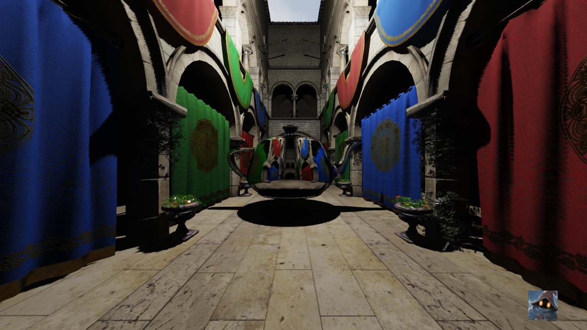

Internal Presentation, Department of Computer Science, KU Leuven, January 2019
Specular Voxel Cone Tracing
Computer Graphics Research Group, Department of Computer Science, KU Leuven

Internal Presentation, Department of Computer Science, KU Leuven, January 2019
Computer Graphics Research Group, Department of Computer Science, KU Leuven

Rough, unpublished and unfinished work about the diffuse and specular Voxel Cone Tracing in MAGE v0, presented during my last working day at the Department of Computer Science, KU Leuven.